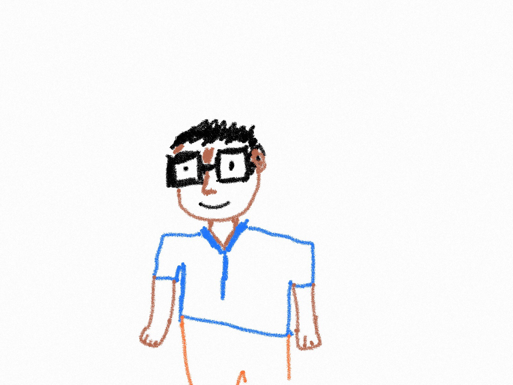

with Bitwise is a lot like Ryker's. I heard about Bitwise through the grapevine. I'd always had an interest in Adobe Photoshop and the mechanics behind web design. Before going into Bitwise, I had been in the repeating cycle of dropping out and going back to Fresno City College with some semblance of the career I'd like to take. With no passion for a certain career I felt like I was going nowhere. While I was networking and looking for a new job, I had an old co-worker offer a scholarship to take four Bitwise classes. I jumped on the opporunity immediately. Since I've grown a curiousity and passion to better my Web Development skills.
